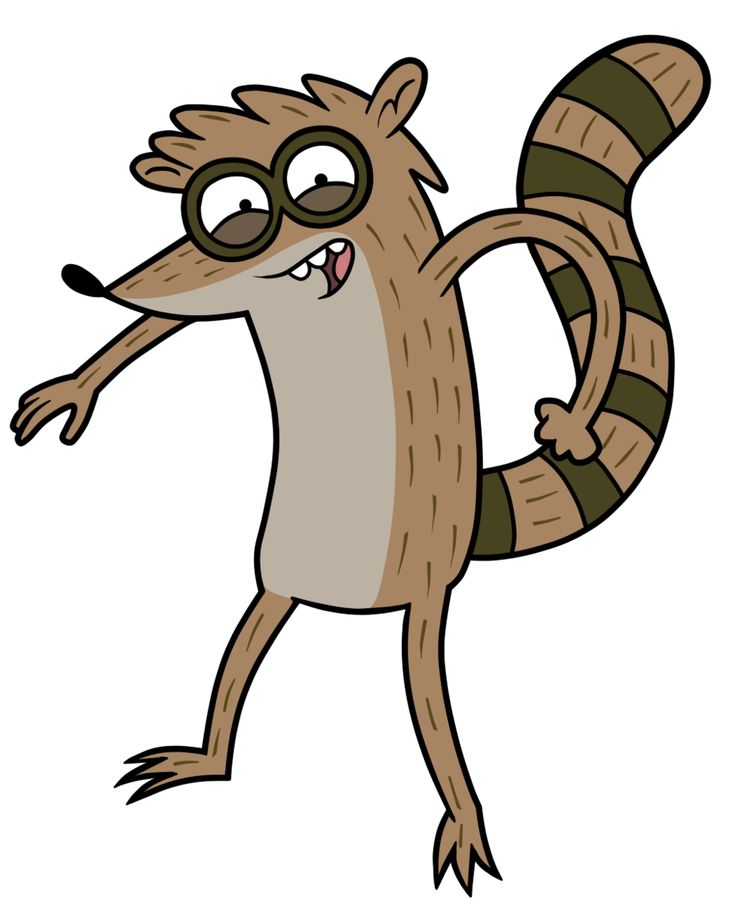

Un Show Más (Regular Show)
J.G. Quintel
J.G. Quintel es el creador de la serie un Show Mas. Una animacion que redefinio el humor absurdo y coridiano en Cartoon Network. Su estilo y combina lo surreal con lo emocional, llevando situaciones simples como acomodar sillas o pedir piza a niveles epicos y cosmicos
Quien es J.G Quintel?
Nombre Completo: James Garland Quintel
Fecha de Nacimiento: 13 de septiembre de 1982
Lugar de Nacimiento: Hanford, California, Estados Unidos
Formacion academica: Estudio animacion en el california Institute
¿Qué es Un Show Más?
Es una serie animada de Cartoon Network. Se transmitió desde 2010 hasta 2017. Tiene 8 temporadas y una película. Los protagonistas son Mordecai y Rigby, dos amigos que trabajan en un parque y viven aventuras locas.
La serie mezcla comedia, surrealismo y referencias a la cultura pop. Es conocida por su humor irreverente y situaciones absurdas.
Un Show Más ha sido muy popular entre adolescentes y adultos jóvenes. Ha ganado varios premios y tiene una base de fans leal.
Personajes principales
- Mordecai
Especie:Arrendajo azul
Personalidad:Responsable, artístico, algo inseguro en temas románticos.
Rol:Protagonista principal, Mejor amigo de Rigby
Notas:Su arco emocional incluye relaciones con Margarita y CJ, y momentos de madurez como en “El Padre Tiempo”.
- Rigby

Especie:Mapache
Personalidad:Impulsivo, perezoso, competitivo.
Rol:Protagonista principal, Mejor amigo de Mordecai
Notas: Evoluciona de ser irresponsable a graduarse y asumir más compromiso.
- Papaleta
Especie:Hombre Paleta (Literalmente)
Personalidad:Inocente, poético, filosófico.
Rol:Hijo del dueño del parque, clave en el final de la serie
Notas: Evoluciona de ser irresponsable a graduarse y asumir más compromiso.
- Benson

Especie:Maquina de Chicles
Personalidad:Estricto, explosivo, pero justo
Rol:Jefe del parque
Notas:Aunque grita mucho, demuestra cariño por el equipo y tiene momentos vulnerables.
- Musculoso
Especie:Maquina de Chicles
Personalidad:Estricto, explosivo, pero justo
Rol:Jefe del parque
Notas:Aunque grita mucho, demuestra cariño por el equipo y tiene momentos vulnerables.
- Fantasmano
- Skips
- Thomas
Mejores capítulos
- El poder
- Extrahuevordinario
- La Galleta de la suerte
- El Padre Tiempo
- Mordecai y Los Rigby's
Curiosidades
- La serie ganó un premio Emmy
- Está inspirada en la juventud del creador
- Usa referencias a videojuegos y cultura pop
- El episodio piloto se llama “El poder”
Enlaces
Guía de episodios
Cartoon Network
Creado por Yeferson Adames